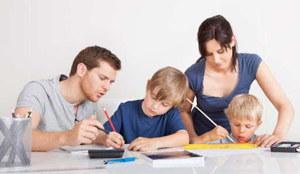
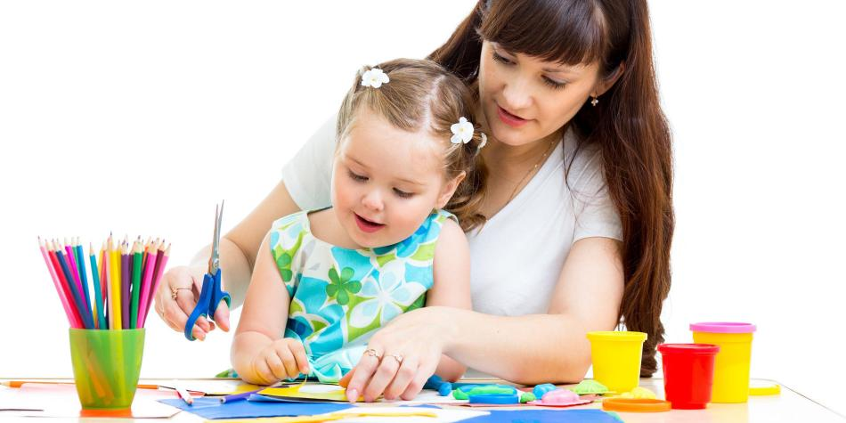
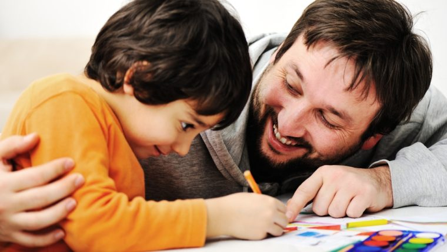

“Los padres deben sentir que es su deber cooperar con el maestro, fomentar la disciplina adecuada y orar mucho por aquel que está enseñando a sus hijos”.
Las familias son una pieza importante en la comunidad educativa, pero para que la participación sea posible es necesario que realmente quieran intervenir en el proyecto educativo, en las actividades,
en las diferentes propuestas que puedan surgir. Un punto importante es la motivación que impulsará a la participación. Y para que haya motivación, las propuestas deben surgir de un interés común, de una necesidad real o de una actividad atractiva para todos.
Un elemento importante dentro de la motivación es que las familias sepan cómo y cuándo participarán. Para ello, es necesario información, comunicación y formación.
Es decir, la participación responsable requiere estar formado e informado,
y esto supone:
Tener estrecho contacto con las familias del alumnado.
Estar en común acuerdo con el equipo directivo del centro y los docentes.
Tener la posibilidad de plantear ideas y experiencias.
Crear espacios para intercambiar opiniones.
Buscar juntos soluciones y mejoras en la gestión de la institución.
Otro punto esencial es que a cada familia se le brinden los espacios y los tiempos para su participación. Todo esto requiere de una organización previa y deliberada, donde un objetivo importante es que cada integrante conozca y comparta la misión y la filosofía de la institución.
“Los principios de la Palabra de Dios han de inculcarse en la vida del hogar y de la escuela. Si los padres comprendieran plenamente su deber de someterse a la voluntad revelada del Señor, serían sabios consejeros en nuestras escuelas y en asuntos de educación, pues su experiencia en la enseñanza en el hogar les enseñaría la forma de precaver contra las tentaciones que asaltan a niños y a jóvenes. Los maestros y los padres así llegarían a ser colaboradores con Dios en la obra de educar a la juventud para el cielo”.
Tips de participación familiar Participación como espectador La institución prepara eventos para que las familias disfruten. Implica también la asistencia a actividades lúdicas, preparadas por la institución en general o por el docente en el aula. Ejemplos: Fiestas de educación física, actos patrios, etc. En estos eventos, las familias asumen el papel de espectadores. Participación como consultor El centro consulta a las familias sobre temas que son de interés para ambos. Conocer la idea de los hogares nos permite apreciar diferentes puntos de vista. Por eso, es importante que los padres participen en comisiones de trabajo. Por ejemplo, desde la institución: Temas en que a los padres les gustaría recibir orientación, organización de escuelas para padres, cursos, etc. Desde la familia: La institución tiene la posibilidad de escuchar opiniones y vivencias de los padres. Sugerencias que pueden ser tenidas en cuenta si es que la gestión administrativa las considera válidas y que no afecten la misión, la visión ni la filosofía de nuestras instituciones. Participación como informador La institución mantiene un feedback positivo con las familias. Es necesario una comunicación asertiva de todas las partes: administración, docente y familia. Cada centro educativo debe ser conocido por los padres, gestionando una política de puertas abiertas. Debemos recordar que se valora y aprecia aquello que se conoce. Por eso es importante proponer canales de comunicación fluidos. Por ejemplo, desde la institución: Cuando se realiza algún cambio que involucre a los padres, como puede ser una modificación en la fecha de un viaje. Desde la familia: Cambios familiares, separación de los padres, viaje por mucho tiempo de uno de los padres, etc. Participación como evaluador El centro forma parte de las evaluaciones junto con las familias. Y es aquí donde todos en forma conjunta pueden proponerse logros y prioridades a alcanzar, asumiendo la responsabilidad para promover el crecimiento social y académico, y asumiendo la responsabilidad de controlar el progreso académico de los alumnos y tener razonables expectativas de éxito. Las familias deben tener en claro que su participación en las escuelas debe servir como ayuda para lograr el desarrollo integral de los niños. No debe ser un papel asumido como control del docente sino como colaborador del mismo. Participación en las decisiones El centro toma decisiones junto con las familias. Participar en grupos de decisión. Ejemplos: Situaciones donde se ven afectadas todas las partes, como puede ser un tema de disciplina, alguna actividad solidaria que se desee realizar, etc. Participación como educador El centro abre sus puertas para que las familias sean parte del proceso enseñanza-aprendizaje y a su vez la institución sea partícipe del desarrollo y la formación familiar. Esta participación se realiza cuando las familias se involucran voluntariamente para organizar y ser parte en diferentes eventos institucionales. La familia asume su rol de educador cuando se hace responsable de los resultados del aprendizaje de sus hijos. Los hijos asumen con responsabilidad actividades en el hogar y la familia coordina y se ocupa para que puedan llevarse a cabo. Organizar actividades para el centro educativo en forma conjunta. Participación de los padres o familiares en las aulas profesiones, temas relacionados a su labor diaria, etc. Estas instancias hacen que los alumnos se sientan motivados a aprender y por otro lado hace que las familias se sientan incluidas en el aprendizaje de los niños. En un mundo tan cambiante y en constante desarrollo debemos asegurarnos de que nuestra formación como docentes nos prepare para dar respuestas reales a las necesidades familiares. Solo de esta manera podremos asegurarnos que estaremos a la altura de sus demandas.
Un plan de reapertura de clases debería apoyarse en al menos 5 pilares.